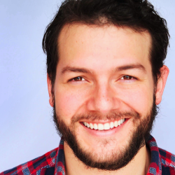

Colton Dillion

...is an actor, designer, engineer, and entrepreneur asking questions about group collaboration.
Ray Doraisamy

...is a lifelong generalist who can't stop asking questions about trust.
Danica Wilbanks
...is a researcher asking questions about moral psychology. She lives for creativity feedback loops and freshly baked sourdough.